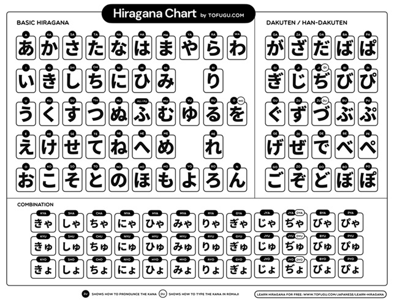

Hiragana - ひらがな
Hiragana é a primeira coisa que um aprendiz da língua japonesa deve aprender. A capacidade de ler hiragana será um pré-requisito para a maioria dos manuais e recursos de japonês para principiantes. É a primeira coisa que se aprende numa sala de aula tradicional.
Tabela de Hiragana - ひらがな表
Na seguinte tabela podemos ver os 46 hiragana base e as suas variações existentes no japonês contemporâneo. Deixo também a ligação para um vídeo no YouTube com a escrita e pronúncia de cada hiragana. Este foi publicado pelo canal "Learn Japanese Channel" que é uma falante nativa de Japonês.

Com isto, falta apenas uma coisa. O tsu pequeno (っ). Este é exatamente igual ao tsu (つ) mas mais pequeno. É usado para introduzir uma "pausa" entre dois hiraganas. Mais uma vez, deixo um vídeo no YouTube de um falante nativo, 東宮たくみ (Tohgu Takumi), que explica como ler esta variação.
Outros websites ou apps que me ajudaram no estudo de hiragana incluem:
Ainda hoje uso o Anki para aprender novo vocabulário. Para quem gosta de flashcards é uma aplicação excelente.